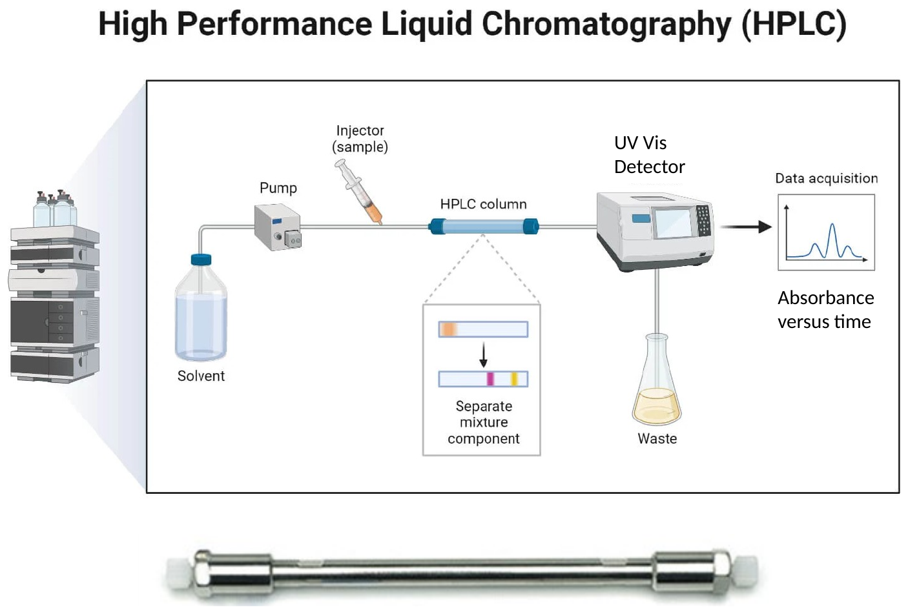
Schematic after microbenotes.com; column photograph after hawach.com
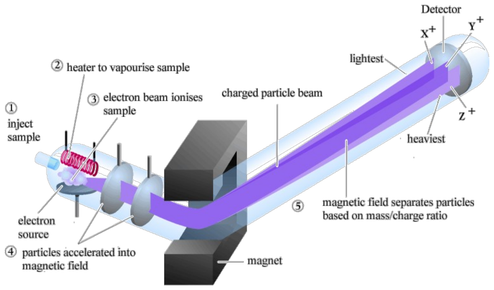
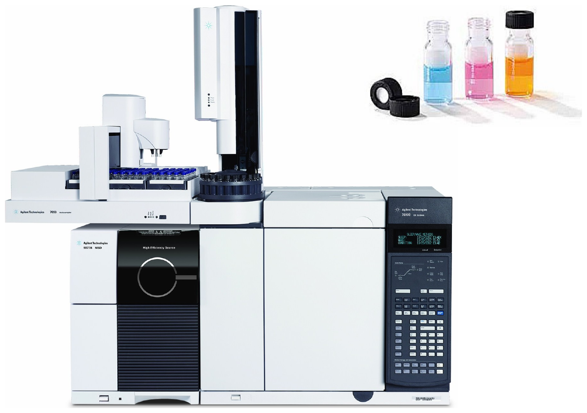
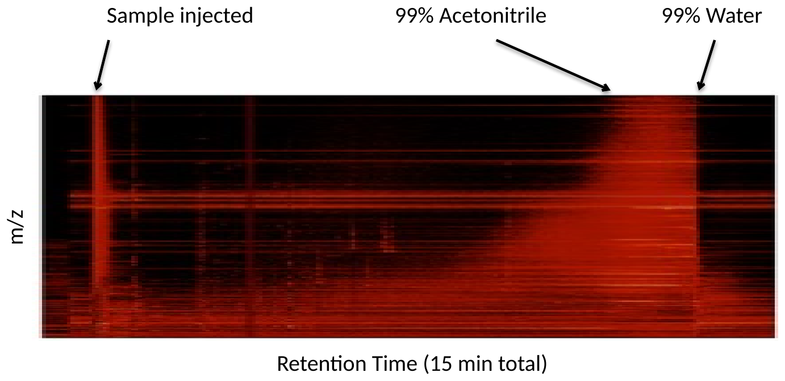
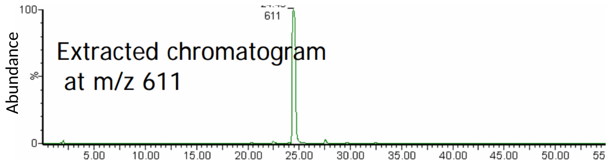
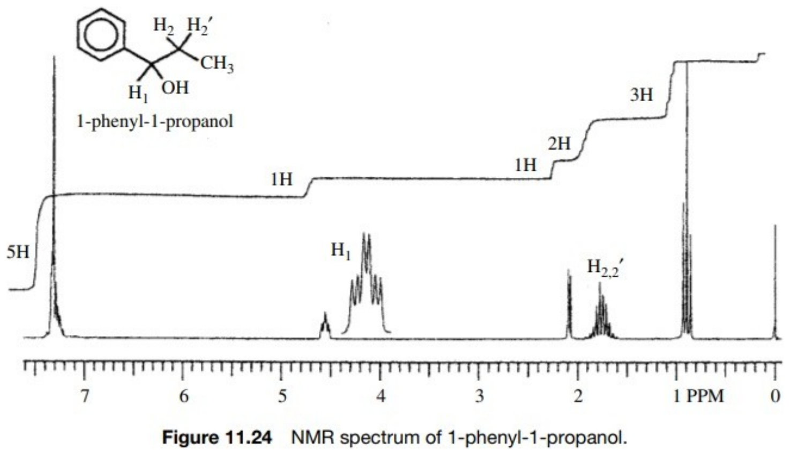
After pharmacy180.com
If you are able to collect enough of a product to clean it up to 95%+ purity, you can run NMR (nuclear magnetic resonance) on it. Here, you put a pure sample of a compound in a strong magnetic field. The field aligns the nuclear spin (a quantum mechanical property of nuclei). When hit with a radio wave pulse of exactly the right frequency, the nuclear spins undergo transitions between energy levels, a process somewhat analogous to absorbance in spectroscopy. Subsequently, the spin will relax back to the original state and in the process emit RF photons. These emitted photons are detected, similar to the emission in fluorescence. Except for determining stereochemistry and sometimes isomers, you can typically determine the structure of a compound by interpreting NMR spectra. This image is of the simplest experiment: 1H (proton) NMR. The area under the peaks is proportionate to the number of hydrogens, so you can deduce the integer number of the H’s that caused the peak, here 5, 1,1, 2, and 3. Based on the peak positions (PPM value) you know whether you are dealing with SP2 or SP3 carbon atoms attached to the hydrogens. Within each peak, the splitting pattern comes from coupling to the H’s on the neighboring carbon, so the number of lines tells you how many hydrogens sit next door. This is a simple NMR – there are much fancier things that allow you to extract even more structural ‘hints’ about the structure that ultimately allow you to narrow it down to only one possible option (or stereoisomers thereof). A proton NMR spectrum with its integrals: the peak positions say what kind of carbon each hydrogen is on, the integral areas say how many, and the splitting says how many neighbours.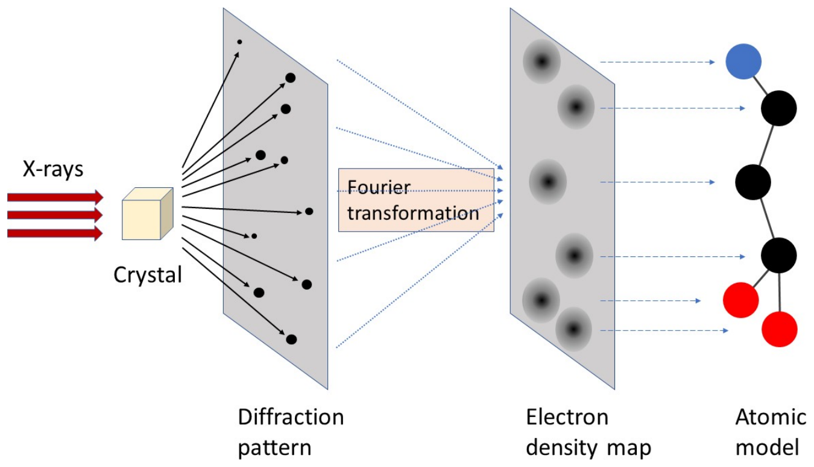
After wiki.aalto.fi
Similarly, if you can get your sample really pure, you might be able to crystallize it, and if so you can do X-ray crystallography. There is a core facility where you can send the crystal, they will bombard the crystal with X-rays and collect the diffraction pattern. The electron density map of the unit cell of the crystal can be calculated from the diffraction pattern, and this basically shows you where the atoms are in space. From this, software can often fit a 3D structure model of the compound to this electron density map to find the most consistent structure and conformation. This gives you information about the absolute stereochemistry and is typically sufficient to resolve any uncertainty about isomers. This can even be done with large protein complexes, though it is much much easier and cheaper to do with small molecule products. The route from a crystal to a structure: diffraction pattern, Fourier transformation, electron density map, and the atomic model fitted into it.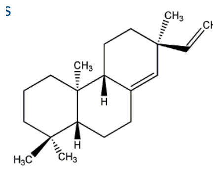
This is the materials and methods section from the Reuben Peters paper where they make the various isopimaradienes. They used a GC-MS to detect products in the microgram/L concentration, so super dilute. This probably the only method that could detect it at such low concentrations. Generally, when choosing an analytical method, you look for papers where they isolated and quantified something very similar to what you are trying to detect, and try that. The materials and methods paragraph of the paper, with the sentence naming the GC-MS instrument and column picked out.Recombinant strains. Analysis Gas chromatography-mass spectrometry (GC-MS) was performed on organic extracts using an HP1-MS column on an Agilent (Palo Alto, CA) 6890N GC instrument with 5973N mass selective detector in electron-ionization mode (70eV) located in the W.M. Keck Metabolomics Research laboratory at Iowa State University, much as previously described.5 Briefly, 5 µL of sample was injected at 40°C in splitless mode, the oven temperature held at 40°C for 3 min., then raised at 20°C/min. to 300°C, and held there for 3 min. MS data was collected from 50 to 500 m/z during the temperature ramp and final hold. The biosynthetically produced diterpenes were identified by comparison of retention time and mass spectra to authentic samples (see Supporting Figure). The amount of diterpene produced was determined by comparison of the biosynthetic organic extracts to a standard curve constructed with the use of known quantities of cembrene (Acros Organics, Geel, Belgium)
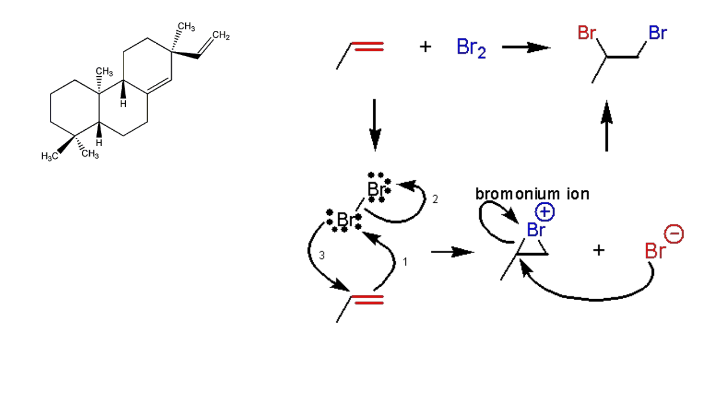
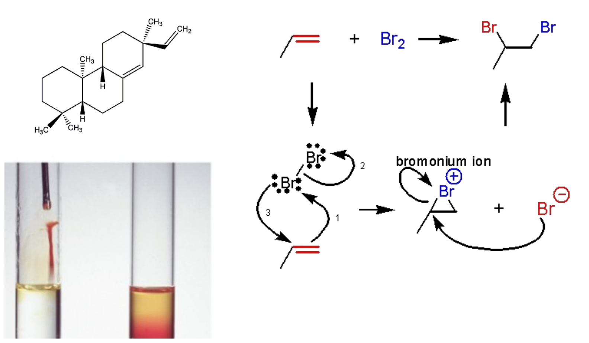
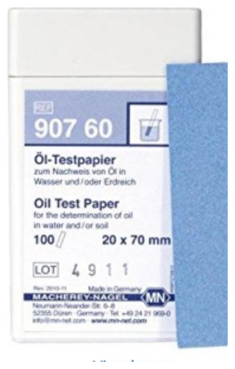
Patent EP0580070A2
For some compounds, there are off-the-shelf consumer products that can detect them. For isopimaradiene and other hydrocarbons, these oil test strips likely could detect the product in a drop of culture. They work on mg per L concentrations of gasoline, pet ether, and fuel oil, which is similar in terms of chemical properties and concentrations to our situation. A commercial pack of oil test paper and its limits of sensitivity: 250 mg per litre for petroleum ether, 10 for gasoline, 5 for fuel oil.I’ve taken my yellow pigment device and joined it to an HIV biosensor device. What experiment should I do to characterize the entire system?
You don’t really need to confirm the lutein structure again – that is unlikely to change, instead you need to compare the system with and without HIV particles present. How you do the measurement is whatever is easiest. You could do the same extraction and LCMS as in #1, but you probably could get away with taking a picture of the cells, or perhaps an absorbance measurement of the yellowness. The key is it is a differential measurement comparing one sample to another, as discussed in the last lecture. Question to ponder, on the amber ground: the yellow pigment device has been joined to an HIV biosensor device. What experiment characterizes the whole system?